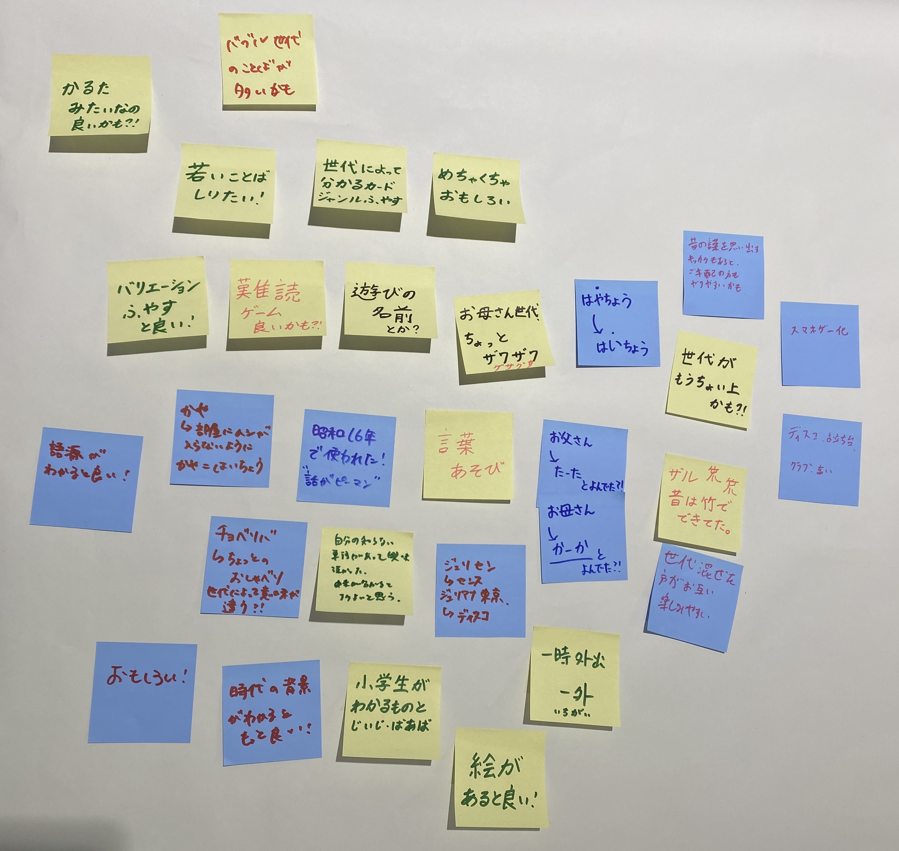

２０２５年１０月４日
【やったこと】
- グループごとに製作発表
- テーブルごとにより詳しい説明
- 感想・アドバイス共有
グループごとに製作発表
共起ネットワークの説明：いつき
(ホテルの例がとても分かりやすかった。スタッフ⇒対応⇒雑・良い、部屋⇒清潔・広い)
トランプ班・車いす班・靴下班・世代間交流班・鎌倉市ゴミ問題班の順で発表。
(詳しくは、自分が関わった班のみ覚えてる範囲記載。)
【トランプ班】
登壇者：まみ・もえか・すず・ミョンチョル・たくむ・そういちろう
問題発見：まみ
⇒手がマヒしている人は片手しか使えないことが多い。娯楽を楽しめるモノが欲しい。
そこで、手がマヒしていても、不自由なく娯楽を楽しめるようになりたいという想いを形にするべく、片手でも楽しめるトランプを作成。
共起ネットワーク・動画投影(パソコン操作)：たくむ
製作物の説明：ミョンチョル
⇒製作根拠：カードを混ぜるのは片手だと難しい点に着目。
⇒こだわり：歯車のサイズを別にすることで、左と右でカードが落ちる速度を変え、カードを混ぜるように設計。３Ｄプリンタ・レーザーカッターを使用。
⇒今後の展望：固定したら片手で簡単に楽しめるようになる。
【世代間交流班】
登壇者：ななみ・わかば・あやな
問題発見：ななみ
⇒子ども・若い・お年寄りのキーワードに着目。
⇒世代間の繋がりが減ってる。世代関係なく集まれるコミュニティが無くなっている。
そこで、子どもたちとお年寄りの会話を広げるタネとなるモノを作成。
製作物の説明：ななみ
⇒お年寄りの世代のものや言葉を題材。若者は自分たちで考えつつ、お年寄りの方に正解を教えてもらうカードゲーム。
共起ネットワーク・動画投影(パソコン操作)：あやな
【鎌倉市ゴミ問題班】
登壇者：ももか・いつき・あやな・きいち・あっちゃん
問題発見：ももか・あやな
⇒鎌倉市のゴミの分別が厳しい。
⇒紙袋・ミックスペーパー、モノによって分別が難しい点に着目。
⇒ex:段ボール・厚紙は中の色により分別が変わる。
⇒分からない時は市役所に毎回電話をして聞いてる。
そこで、システムを作成。
共起ネットワーク・動画投影(パソコン操作)：あやな
製作物の説明：いつき
⇒分別を教えてくれるLINE BOTを作成。
⇒LINEにchat GPT(AI)を繋げた。送信した写真を解析し、分別方法を教えてくれる、LINEで全て完結するシステム。
⇒こだわり：AIが無かったら作れなかった現代ならではのシステム。
⇒(文章のみのLINEで回答システムは鎌倉市ですでに導入済み。)
テーブルごとにより詳しい説明
【世代間交流班(テーブル１:ななみ・わかば・あやな・きいち)】
＜感想＞
人によってそれぞれ。いまいちな反応もあれば、面白いと伝えてくれた方もいた。
作成したお題が昭和世代・バブル世代のモノが多く、じいじ・ばあば世代でなかったためにグサッと心にきた方もいた。
はじめは、世代ごとにバリエーション別で作ろうと考えていたが、時間が無く断念したところもあった。
しかし、今回の感想を聞いて、いろんな世代のお題をごちゃまぜにして、タイトルを変えるのが良いと感じた。(改良余地あり)
＜アドバイス＞
かるた遊びにアレンジ！
お題の時代背景や語源についても記載すると会話が膨らみそう！
難読漢字ゲーム(ex⇒ザル＝笊：昔は竹でできてた)も良いかも？！
ETC.

感想・アドバイス共有
【世代間交流班】
上記記載。
【トランプ班】
アイデア・発想は素敵！
混ざったトランプが取り出しにくいため、引き出し型にするのはどうか。
【鎌倉市ゴミ問題班】
ゴミの出し方(袋に入れる・紐で縛るetc.)や、ゴミ出しの曜日が分かるようになると良い。
音声での読み上げ機能があると良い。